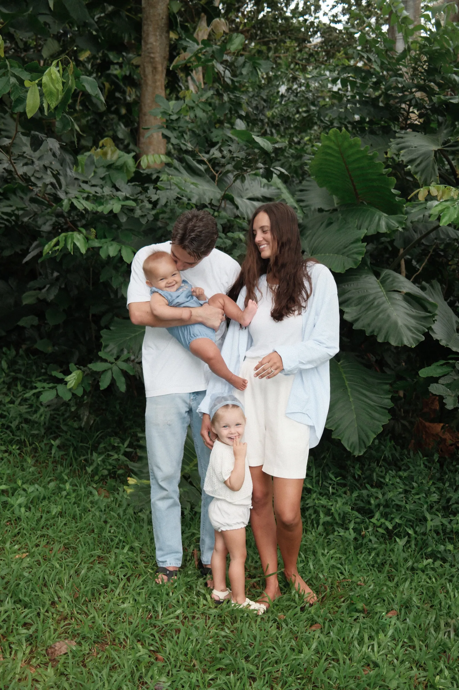

Steward your time, energy, and resources to build your faith, family, and business, and become the man, husband, and father God knows you can become.
You're already driven. You're already producing real results. And you're still working too many hours for what you get back, caught in the pull between providing for your family and actually being there for them. As a Christian business coach for founders, salespeople, and creators, I work with men in exactly that spot. The goal isn't to work less for its own sake. It's to stop letting work, or anything else, crowd out the moments that matter most, so you don't look up in ten years with regrets you can't undo.
Build more. Miss less of what matters.

If any of these sound like you, you're exactly who I built this for:
You're not lazy. You're buried in busywork that feels productive but isn't moving the number that actually matters.
The income is for them. But the hours it takes keep coming out of the time with them, and that quiet trade adds up fast.
It's rarely a knowledge problem. It's usually a fear or a belief running underneath, and it shrinks the moment you name it.
You can feel the next level. You just can't see the next step. That's exactly where a clear plan and real accountability change everything.
A simple, repeatable system we run together every week. You don't figure this out alone, I show you the exact order that gets you unstuck, wins your time back, and helps you thrive in the areas of life that matter most.
Together we reverse-engineer the few actions actually driving your results, then cut the busywork that only feels productive.
If it isn't scheduled, it doesn't happen. We build your week around the number that matters, then guard that time.
Whether it's your actions, your habits, or the emotional resistance underneath, like fear, resentment, or guilt, we work through it together and get you moving again.
The result isn't just a bigger business. It's 10+ hours a week back, pointed at the faith, family, and life the work was always for.
Every time he got close to a real decision, the deal slowed down. It looked like bad timing. It was fear, dressed up as hesitation. He kept showing up scared instead of waiting to feel ready, closed and funded the deal, and still runs it today.
I'm Scotty. Husband, father, and serial entrepreneur. The coach you'd actually be working with, every single call, is me. Here's why men choose this over the alternatives.
I've run more than ten businesses, from local services to digital marketing, through real wins and real losses, like a partnership that cost me multiple six figures but earned me the hard lessons I now hand straight to my clients. I coach from the exact stall points I've hit, not from theory. I've lived it, and so have my clients.
Principles taught by Jesus Christ are woven through how I coach. This is built on faith, and faith without works is dead, so we pair real belief with real action. God first, then family, then the business, in that order.
Every call is with me, and your coaching is built custom around your progress, so each week stacks on the last. It's a real relationship, not a group program or an event you get lost in.
The Freedom Framework is specific and repeatable, and it's backed by my Time-Back Guarantee: do the plan and win back at least 10 hours, or your money back.
I do this because I genuinely love the people I work with. I want you to win in your life and in your mission as a husband and father, or the one you're becoming. Who you are matters. It shapes the generations coming after you, and I coach you like it does.
Prefer the backstory first? Read more of my story →
Real answers in a couple of minutes, and a clear first step you can take today.
A few quick questions to find the #1 hidden block capping your growth, fear, clarity, priority, discipline, or a limiting belief, with the first move to clear it.
Find my block →A free 30-minute strategy call with me. We find your single biggest opportunity and your very next move.
Book my call →See how many hours a week you could win back, with your top three time leaks and a fix for each. About two minutes.
Find my hours →No fluff, no filler. Real answers in my own words, pulled from what I actually coach.
Not someday, when things finally slow down. Now, while they are still this small. Win back the time, and spend it where it actually counts.
Find your #1 block in a couple of minutes, free. If it helps and you want to go deeper, that's where coaching comes in.
Take the free Block Finder